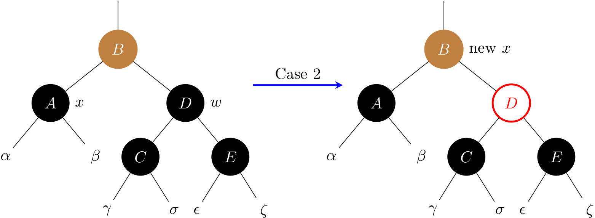
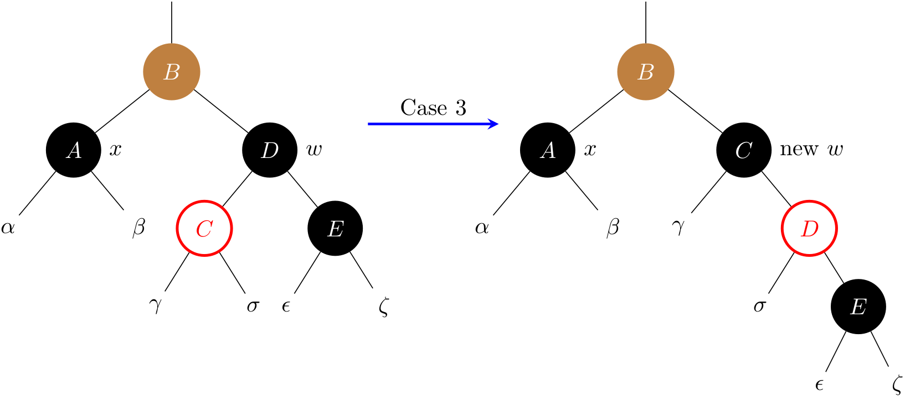

Red Black Trees (2)
In this section, we will focus on the deletion. Deleting a node from a RBT takes \(O(\lg{N})\) time, and it is more complicated than inserting a node.
Delete a node (1)
A helper method
As part of the process of deleting a node, subtrees need to move around. The following subroutine transplant() does the following work:
- replaces the subtree rooted at node
uwith the subtree rooted at nodev - node
u's parent becomes nodev's parent u's parent ends up havingvas its child
First, let's design an algorithm to delete a node as if there were no color in nodes.

Deleting a node given a key can be described as
- First, find a node
zgiven akey - Then, delete node
z
public void remove(int key) {
Node z = get(key);
if (z != null) {
delete(z);
}
}
Delete a node (2)
Recap the two cases of deleting a node z in a BST:
- Case 1.
zhas at most one child. To deletez, we use its child (it can benull) to take the position ofz. - Case 2.
zhas two children. Thenyis the successor ofz.right. Ifyis notz.right, execute step (a) and (b) sequentially; otherwise, execute only step (b).- (a)
y.right(it can benull) takes the position ofy, and then updatey.righttoz.right. - (b)
ytakes the position ofz, and then updatey.lefttoz.left.
- (a)
In fact, case 2 can be transformed into case 1 by updating the z.key to y.key. In light of this, we can design a more readable algorithm:

By taking the leverage of the ternary conditional operator in Java, the code can be even shorter in practice for case 1:
Node<Key> x = (z.left != null) ? z.left : z.right;
transplant(z, x);
In Python, it can be written as:
x = z.left if z.left is not None else z.right
transplant(z, x)
Delete a node (3)
To delete a node z in a RBT, we need to consider the color of it:
- If
zis RED, then it will not violate any red-black tree property. - If
zis BLACK, then it violates Property 5 (*change in black height).
We are going to say that Property 5 has not been violated and the node x which is now occupying z's original position has an extra black in it. In this way, the property of black height is not violated but Property 1 is violated, because x now is either
- Double black, transformed from BLACK.
- Red and black, transformed from RED.
For example, deleting z in the following result in a red and black node:

With this thinking, we can say that either Property 1, 2 or 4 can be violated. If x is red and black or is root, we can simply color it black.
What if
xis null?Now let's consider a special case when
xis null (i.e.,zdoes not have any child). As we can see, the introduction of the sentinel (NIL) will lead to simpler code, because we can regard it as a regular node whose color is always black. For example, we are able to up-swim to the parent from aNIL, and \(v.p \gets u.p\) is always valid in thetransplant.
Therefore, suppose z has at most one child, we use its child x to replace its position:
- Case a: if
zis red, then just delete it. - Case b: if
zis black with a red childx, then colorxto black. - Case c: if
zis black, andxis also black, then things get complicated, and we need to fix it up. In this case,xis a double black node.
To understand case c, readers can try to maintain the BST by deleting 1:

In what follows, we will analyze four sub-cases for case c when x is a left child, and another four cases when x is a right child is symmetric.

Case 1: x's sibling w is red

Case 1 is transformed into case 2, 3, or 4 by exchanging the colors of nodes B and D and performing a left rotation.
Case 2: x's sibling w is black, and both of w's children are black

To balance the black height, this cases removes one black from both x and w, leaving x with only one black and leaving w red. To compensate for x and w each losing one black, x.p can take on an extra black. Line 16 does so by moving up x to its parent.
Note that B is colored in brown, meaning it can be either black or red. If case 2 enters from case 1, then the new node x (i.e., B) is red-and-black. Then the while loop terminates.
Case 3: x’s sibling w is black, w’s left child is red, and w’s right child is black

This case switches the colors of w and its left child w.left, and then performs a right rotation on w. Then it falls through into case 4.
Case 4: x's sibling w is black, and w's right child is red.

Some color changes and a left rotation on x.p allow the extra black on x to vanish. Note that D's color is set to the one of B. Line 31 sets x to root, and the while loop will terminate.